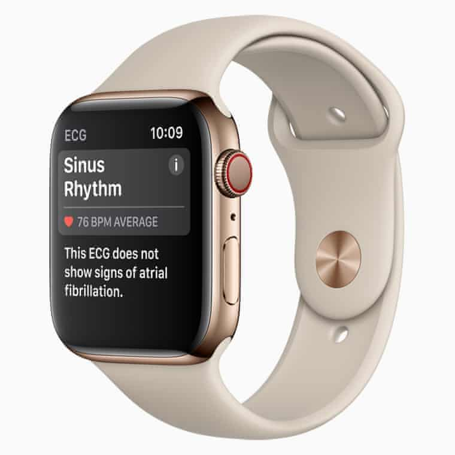

Apple has launched a trio of iPhones and upgraded smartwatches that can detect heart problems at its annual product launch event in Cupertino on Wednesday.
The tech company unveiled a new iteration of the flagship iPhone X with a 5.8in screen dubbed the iPhone XS – pronounced “ten S” rather than “excess” as well as the iPhone XS Max, which comes with a larger 6.5in screen.
Both feature an upgraded version of the iPhone X’s dual lens camera – one of the device’s best features – which allows for better portraits and higher-quality videos even in low light. They also come with Face ID facial recognition for unlocking the device and a richer display.
The company is also launching a lower-cost 6.1inch version, the iPhone XR. The iPhone XR comes in a range of candy colours, is made from aluminium rather than stainless steel, has a single camera system and trades the OLED screen of its more expensive counterparts for an edge-to-edge LCD screen.
The last time Apple launched a lower-cost version of the iPhone was the iPhone 5c in 2013, when it took the innards of the previous generation’s iPhone 5 and wrapped it in a plastic body.
All three devices also come with a more powerful ‘A12 Bionic’ processor which allows developers to build more sophisticated video games, augmented reality experiences and other apps with real-time features that couldn’t previously run on a mobile device. Apple demonstrated one app, HomeCourt, that uses the camera viewfinder to track and analyse basketball shots to provide real-time feedback that can help players improve their technique.
“No other chip in the world would allow us to do this,” said Apple’s Kaiann Drance, on stage at the Steve Jobs Theater at Apple Park, the company’s new “spaceship” campus.
“With the new iPhone X line-up and its pricing repositioning, Apple demonstrates once again it excels at extending the lifecycle of its product portfolio through incremental innovation, impressive technical specifications boosting the performance of its devices and smart marketing,” said Forrester analyst Thomas Husson.
The iPhone XR starts at $749 for 64GB of storage and can be pre-ordered from 19 October. The iPhone XS starts at $999; and the iPhone XS Max at $1099, and both can be pre-ordered from 14 September. The phones are due to ship a week after pre-orders are open.
Apple also unveiled the Apple Watch Series 4, with improved cellular connectivity, larger screen, more powerful processor and a range of additional health-tracking features.
The smartwatches now feature an electrocardiogram (ECG) sensor which can measure not only the heart’s rate but its rhythm. Such a sensor can detect heart rhythm disorders such as atrial fibrillation, a common cause of strokes. The watches, which have been endorsed by the American Heart Association and have clearance from the FDA, still have the original optical sensors, which flash pulsed light through the skin to detect heart rate.
The device has also been fitted with an improved accelerometer and gyroscope that can detect if someone has fallen over, a feature that could be useful for older people. If a fall is detected and the person remains immobile for more than a minute, the device automatically calls their emergency contact.
“Fall detection is a feature we hope you never need, but it’s really nice to know it’s there,” said Apple chief operating officer Jeff Williams.
At 40mm and 44m, the two variants are slightly larger, but thinner, than the previous iterations that measured 38mm and 42mm. The watches can be pre-ordered from 14 September with cellular connectivity, starting at $499, or just GPS, starting at $399.
The older Series 3 watches will remain on sale from $279.
Relate: